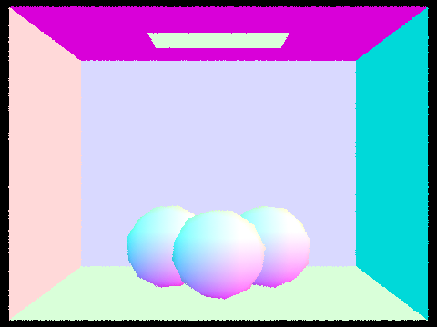
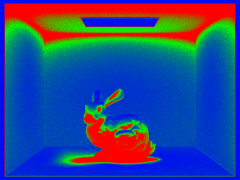

In this project, we implemented a physically-based renderer using a pathtracing algorithm to render scenes with complex geometry and lighting. We first created simple ray-privitive intersect functions and a camera ray generating algorithm to render simple scenes. From there, we implemented bounding volume hierarchy (BVH) to speed up ray-primitive intersection, which greatly optimized our render times. Scenes with complex geometry and mesh were rendered in O(log(n)) time compared to O(n) time with BVH implementation. To incorperate physical lighting into the scenes, we implemented direct and global illumination with hemisphere and importance sampling. These sampling methods used Monte Carlo Integration to estimate our physical lighting. Finally, to reduce noise in our scenes, we implemented Adaptive Sampling, which optimized our pixel sampling rates to account for higher and lower pixel convergence. This project allowed us to explore and learn about path tracing used in the industry, such as Renderman. It also helped us understand different ways of optimization that greatly improve render times without sacrificing image quality.
Part 1: Ray Generation and Intersection
In Part 1, we implemented a ray trace algorithm for pixels using random sampling to generate light rays. These light rays travel from a light source and bounce off of some object in the
scene to the camera. However, since some of these rays do not reach the camera, we generated camera rays to more efficiently create our scenes. To generate camera rays, we created a function
Camera::generate_ray that takes normalized image coordinates and transforms these coordinates to a camera ray in world space. Because the camera space has its own coordinate system, we
first converted our image space coordinates to camera space coordinates before transforming it into a ray in world space. This function outputs a Ray object, which consists of an origin and direction
vector that will be used to test object intersection.
After generating our camera rays, we implemented PathTracer::raytrace_pixel where we randomly generated a fixed number of rays per pixel using the Sampler and our defined generate_ray function.
From there, we implemented Triangle::intersect and Sphere::intersect functions that return true whether an input ray intersects with the
given primitive, and stores information about the intersection point. For our triangle intersection method, we used Barycentric Coordinates and the Moller-Trumbore algorithm:
|
|
|
In a triangle with vertices P0, P1, and P2, we can find its ray intersection point t by using the Moller-Trumbore algorithm to calculate the barycentric coordinates b1 and b2, as well as t. We obtain the third barycentric coordinate by subtracting 1-b1-b2. To check whether a ray has intersected a triangle, we performed multiple checks:
1.) If t >= 0
2.) t is in the range of the ray's minimum and maximum coordinates
3.) The barycentric coordinates (b1, b2, 1-b1-b2) are in the range [0, 1]
If all three coditions were satisfied, then the ray has intersected the triangle. If this was the case, we updated the Intersection struct attributes to store information
about the intersection point t, the primitive intersected, the normal at point of intersection, the BSDF of the surface at point of intersection, and the ray's "end point," max_t.
We also performed a similar operation for ray-sphere intersection by finding possible times of intersection (t1 and t2 since a ray can intersect a circle at two points) using the quadratic formula. Similarly, we checked whether t1 and t2 fell in the bounds of the ray's range, and updated the Intersection struct accordingly.
After implementing both Triangle::intersect and Sphere::intersect, we were able to generate the room shown below!
After finishing part 1, We were able to render simple scenes using our randomly sampled ray tracing, generated camera rays, and primitive instersection functions!
|
|

|
Part 2: Bounding Volume Hierarchy
For part 2, we implemented a bounding volume hierarchy (BVH) in order to accelarate our path tracer so that it can render complex files more efficiently. With a naive implementation, the path tracer rendered simple images in ~100 seconds. This is fairly inefficienct because the path tracer was checking if each ray was intersecting every object in the scene, even if the ray completely missed the object. This inefficiency is resolved with BVH, which that uses a simple heuristic to "bound" the object in a simple box to first check whether the ray hits the box. If they ray intersects, the box, the object is recursively split into smaller bounding boxes to check if the ray still intersects. Essentially, we constructed a tree that stores a list of object primitives along with their bounding boxes. This simple algorithm greatly improves rendering times because the ray is not arbitrarily checking the millions of primitives in a scene.
To begin constructing BVH accelaration, we first needed to choose a way we wanted to split our objects up, (a heuristic.) We chose to split the
object in half based on its longest axis. To do this, we first created a bounding box of all of the primitives' centroids, and used the bounding box
attribute .extent, which is a vector spanning the extent of the bounding box (min corner -> max coner), to find the largest of the the
x, y and z coordinates. The largest coordinate would tell us which axis is the longest. After finding the longest axis, we calculated the midpoint of this axis
as the split point heuristic to split our object primitives.
Then, we began to construct our BVH. A BVH leaf node stores a list of object primitives and their bounding boxes, and a BVH node stores the
larger bounding box of all objects and pointers to its left and right nodes. For our implementation, we first looped through all primitives and stored
them in one large bounding box. From there, we checked whether the number of primitives was <= max_leaf_size where max_leaf_size
is an upper bound to how many primitives a leaf node should contain. If there were more primitives than max_leaf_size, we partitioned our
primitive list using std::partition and our heuristic. The partition function works as follows: If the primitive's centroid was < the splitpoint of the longest axis,
we leave the primitive in the front of the list. However, if the primitive's centroid is >= the splitpoint on the longest axis, the primitive is moved to the back
of the list. Essentially, this creates two halves of one list, the first half < splitpoint and the second half >= splitpoint. After partitioning, we created
the root BVH node holding all of the primitives in one bounding box, and used tree recusion to construct the left and right child nodes with our partitioned primitive list. "
After completing BVH, we implemented several recursive BVH intersection functions that returns true if a ray has intersected with a bounding box and stores information on where the closest intersection took place. To do this, we used the ray and axis-aligned box intersection method as well as the BVH recursive traversal method as seen below. Using these two algorithms, we were able to effectively check whether a ray intersected a bounding box.
|
|

|
After fully implementing BVH, we were able to render beautiful and complex images in seconds. For example, with our native implementation, Cow.dae took roughly 1 min 40 seconds (100 seconds) to render. However, with BVH implemented, it took a whopping 0.2444 seconds! Furthermore, when testing on more complex files, MaxPlanck.dae took roughly 11 min 48 seconds (708 seconds) to render with the naive implementation compared to the BVH render time of 0.348 seconds—roughly 2000x speedup!
Some scenes, like Dragon.dae, were too complex for the naive implementation to render! However, after implementing BVH, we were able to render complex scenes with intricate geometry and mesh. For example, Dragon.dae to about 0.274 - 0.596 seconds to render with BVH. Thus, it is very apparent that this simple algorithm was able to reduce our render times significantly. The BVH implementation, a good heuristic, and our intersect functions are able to effectively pick which bounding boxes intersect with rays, and disregard other bounding boxes that do not intersect with the ray at all. This enables us to reduce redundancies, and greatly reduce up our ray intersect runtime complexity from linear O(n) to logarithmic O(log(n)).
Pictured below are a few files ranging from simple to complex after BVH implementation.
 |
 |
 |
 |
 |
 |
Part 5: Adaptive Sampling
From Parts 3 and 4, we were able to render complex and realistic images with Monte Carlo. However, our images have large amounts of noise because there are not enough samples per pixel. Thus, if we increase increasing the number of samples per pixel, we can reduce the noise in an image. Due to different textures, geometries, and shapes within a scene, some pixels converge faster with low sampling rates, while other pixels require more samples to get rid of noise. Thus, Adaptive Sampling is useful since we do not have to sample uniformly for all pixels. Adaptive Sampling tests each pixel by checking how fast the pixel converges when we ray trace samples through it. Essentially, Adaptive Sampling concentrates a high number of samples to more complicated parts of the image (pixels converge slower) so that we are not redundantly sampling over areas where pixels converge faster.
To implement Adaptive Sampling, we updated PathTracer::raytrace_pixel with a simple algorithm. We are looping through a fixed number of samples per pixel, but with Adaptive Sampling, we
check each pixel's convergence every 32 samples using this formula:
To compute variance and mean, we used the pixels illuminance to keep track of two variables s1 and s2 where each x is the pixel's illuminance.
From there, we were able to calculate the mean and standard deviation necessary for the convergence formula and convergence check.
|
|
|
The smaller the I, the more confidently we can say that our pixel has converged. Thus, for every 32 samples, if the condition below is satisfied, we
assume that the pixel has converged and we stop tracing rays for that pixel. If it is not satisfied, we continue to race rays. Finally, we updated our sampleCountBuffer
with your number of samples per pixel so that we could visually see the output sampling rate images. Below are the final rendered images using 2048 samples per pixel. On the right, we
we see our image has little to no noise, and on the left, we see the sampling rate color coded by the amount sampled per pixel. Here, blue indicates a low sampling rate, and red indicates a
high sampline rate. We can visually see how the Adaptive Sampling algorithm enabled different sampling rates for different parts of the image. Areas where there is fast convergence, like the walls
and area light, where sampled with much fewer samples compared to areas with low convergence like the bunny's shadow and corners of the ceiling. Low convergence areas were sampled much more to get rid of
noise.
|
|

|
We collaborated well as a team when working on this project. To split up the work, Natalie implemented most of Parts 1, 2, and 5, while Ryan implemented Parts 3 and 4. We attended project parties, and met outside of class to collaborate, talk, and debug our work together. As we implemented each part of the project, we learned how much simple optimizations, such as BVH constuction, can greatly improve runtime, as well as how different sampling methods (importance vs hemisphere) contribute to the direct lighting of our scenes.